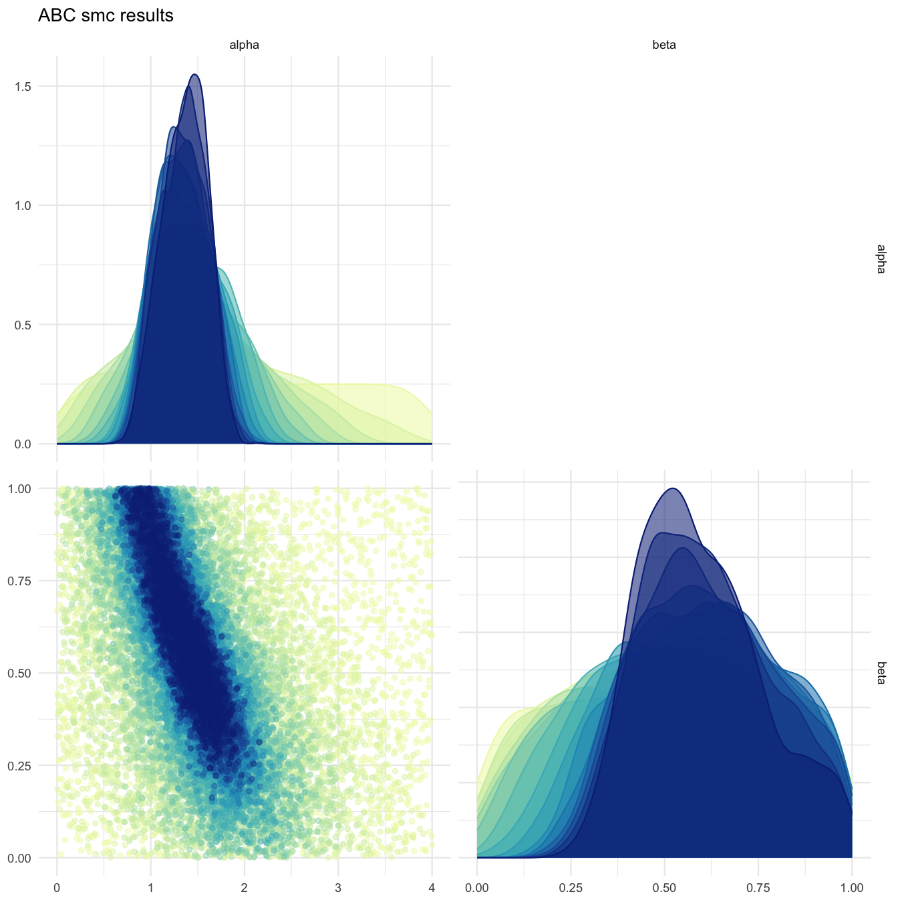
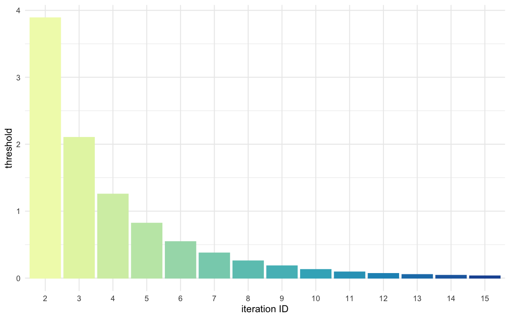
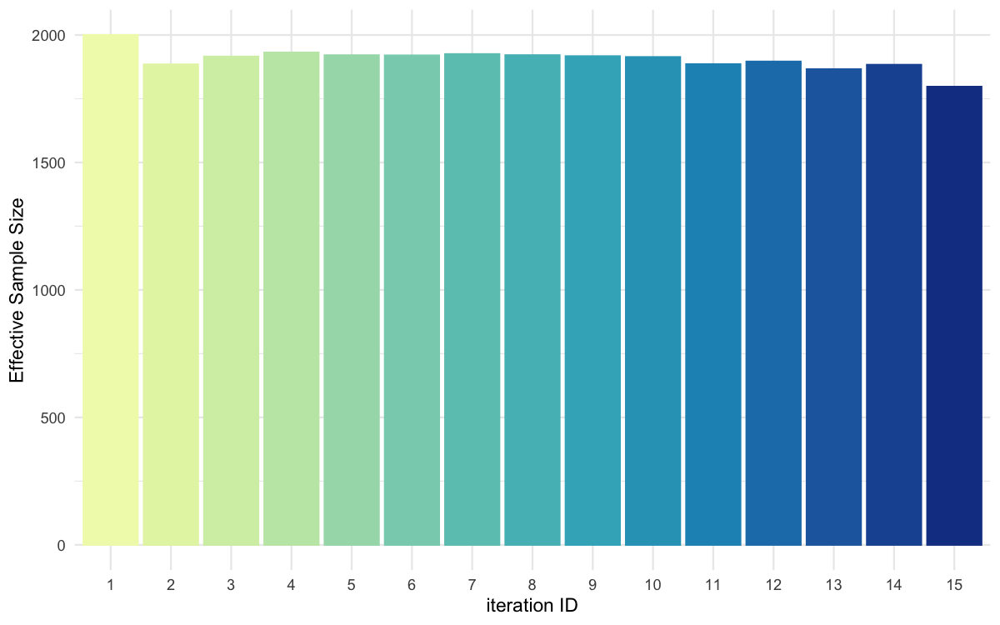
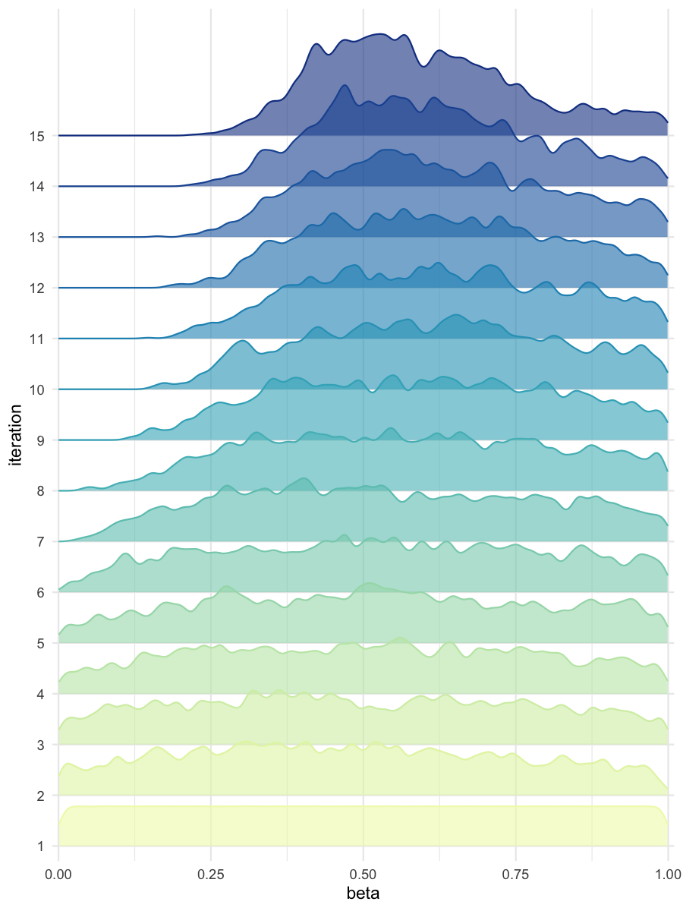

Simple estimation using ABC-SMC
Create a reference trajectory
sum_stat_obs <- c(2.0, 0.75)Run abc smc procedure
res <- abcsmc(model_list = model_list,
prior_dist = prior_dist,
ss_obs = sum_stat_obs,
max_number_of_gen = 15,
nb_acc_prtcl_per_gen = 2000,
new_threshold_quantile = 0.8,
experiment_folderpath = "smpl",
max_concurrent_jobs = 5,
verbose = FALSE)Plot results
all_accepted_particles <- res$particles
all_thresholds <- res$thresholds
plot_abcsmc_res(data = all_accepted_particles, prior = prior_dist,
filename = "smpl/res/figs/smpl_pairplot_all.png", colorpal = "YlGnBu")
#> [1] "Plot saved as 'png'."
#> Registered S3 method overwritten by 'GGally':
#> method from
#> +.gg ggplot2
plot_thresholds(data = all_thresholds, nb_threshold = 1,
filename = "smpl/res/figs/smpl_thresholds.png", colorpal = "YlGnBu")
#> [1] "Plot saved as 'png'."
plot_ess(data = all_accepted_particles,filename = "smpl/res/figs/smpl_ess.png", colorpal = "YlGnBu")
#> [1] "Plot saved as 'png'."
#> gen ess
#> 1 1 2000.000
#> 2 2 1879.991
#> 3 3 1911.084
#> 4 4 1912.185
#> 5 5 1932.160
#> 6 6 1928.654
#> 7 7 1929.189
#> 8 8 1911.218
#> 9 9 1926.055
#> 10 10 1890.400
#> 11 11 1921.755
#> 12 12 1879.451
#> 13 13 1899.935
#> 14 14 1877.044
#> 15 15 1847.512
plot_densityridges(data = all_accepted_particles, prior = prior_dist,
filename = "smpl/res/figs/smpl_densityridges.png", colorpal = "YlGnBu")
#> [1] "Plot saved as 'png'."

Pairplot of all iterations

Threshold evolution over iterations

ESS evolution over iterations

Density estimates for alpha

Density estimates for beta